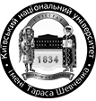

ЛОГЛАЙН
Мавка — Душа Леса и его Хранительница — влюбляется в человека, талантливого музыканта Лукаша, и оказывается перед
трудным выбором: любовь или ее долг Лесной Берегини.
ОСОБЕННОСТИ ПРОЕКТА
Проект создан по мотивам драмы-феерии Леси Украинки «Лесная песня» и на образах славянской мифологии. Мультфильм будет
понятен самой широкой аудитории по всему миру, но вместе с тем он содержит в себе обаяние украинской аутентики, что принесет
зрителям нечто новое и до сих пор не раскрытое в мировой анимации. Сюжет «Мавки» заинтересует взрослых
своей оригинальностью, а детей – приключениями и юмором.
МИССИИ ПРОЕКТА
Привлечь внимание к экологическим проблемам Украины — вырубке древних лесов и исчезновению редких видов
животных и растений, занесенных в Красную книгу Украины. Для этого в магический мир Леса Мавки имплементированы растения
и животные из Красной Книги Украины (черный аист, зубр, рысь и другие). Совместно с Всемирным Фондом Природы в Украине
объявлена долгосрочная благотворительная акция «Спасём рысь!».
Экспортировать украинскую культуру во всех ее проявлениях — традиции, ритуалы, визуальное искусство, музыка
и другие направления. Так, костюмы персонажей разработаны в коллаборации с украинским дизайнером одежды Ольгой Навроцкой.
Ее дизайн соединяет элементы национальной визуальной символики, природные мотивы и элементы мифологии —
все, что находит отклик и в тематике фильма.
Экстерьеры фильма будут основаны на реальных украинских географических локациях, культурных и туристических
достопримечательностях — таких, как леса Карпат и Полесья, деревня Вилково, Каменное село.
Музыка к фильму будет написана известными украинскими музыкантами, и представлять собой микс фольклорных украинских мелодий
в современной аранжировке и специально написанных композиций. Украинская этно-хаус группа ДахаБраха и мультиинструменталист
Максим Бережнюк стали первыми музыкантами, которые начали работу над саундтреком.
ПАРТНЕРЫ

Специалисты кафедры фольклористики Киевского национального университета имени Тараса Шевченко (Елена Ивановская, Олеся Наумовская, Алексей Доля) и Национального центра народной культуры «Музей Ивана Гончара» (Мирослава Вертюк, Петр Гончар) оказывают научную поддержку в интерпретации украинских мифов, легенд, преданий и обрядов во Вселенной Мавки.
Основательница бренда NAVRO Ольга Навроцкая выступила в роли художника по костюмам. Она создала оригинальный самобытный образ главной героини анимационного фильма, в котором переосмыслила национальный костюм. Образ Мавки от NAVRO получил продолжение в капсульной коллекции MAVKA, в которую вошли платья, блузы и шарфы.
Украинский Институт Истории Моды (Мария Квитка) консультировал творческую группу по вопросам, связанным с традиционным костюмом. Институт помогал получить доступ к аутентичным вещам из частных коллекций, элементы и детали которых дополняют оригинальные образы персонажей мультфильма.
При поддержке издательства
«Киевский Дом Книги» вышла книжная серия, посвященная проекту. В серию включили переиздание классической драмы-феерии Леси Украинки «Лесная песня» на украинском и английском языках в кинообложке, адаптированное издание поэмы для детей с иллюстрациями из анимационного проекта и скетчбук с героями фильма.

Специалисты Всемирного фонда дикой природы в Украине (WWF) оказывают экспертную поддержку в вопросах флоры и фауны Полесского края. Представительство WWF также выступило соорганизатором всеукраинской долгосрочной благотворительной акции «Спасём рысь!». Цель акции заключается в том, чтобы привлечь внимание к проблеме исчезающих видов флоры и фауны Украины и поддержать исследования популяции евразийской рыси на Полесье – редкого вида, включенного в Красную книгу.